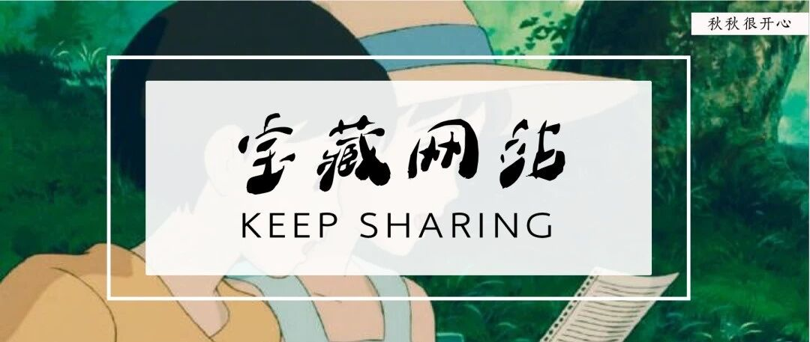

强烈安利这5个超实用的宝藏网站！

做 个 温 暖 的 人，分 享 学 习 干 货
图：@网络
文：@秋秋
大家好，我是秋秋呀～
今天分享5个超实用的宝藏网站，既有学习百宝箱，能让你1分钟拥有各种学习资源；
也有超实用工具，让你秒变高效节省时间。
总之内容非常高质，建议收藏～
1
PPT超级市场
http://ppt.sotary.com/web/wxapp/
第一次打开我就惊讶了，因为这是一个完全免费的ppt模板网站，里面PPT质量都很高。

比如你搜索论文，模版是这个样子：

搜索小清新，是这个样子：

而且还会免费不断更新，想当年我还闲鱼买了好多过时的PPT模板，一打开真的不忍直视😭
还有我喜欢它的一点是，不用注册，打开搜索下载一气呵成，真的太省事了～
2
纳米学习网站导航
http://www.1nami.com/
实实在在的宝藏，想要学习提升自己的集美不要犹豫，快把它设置成浏览器主页！
因为这就是一个学习百宝箱～

涵盖了网易公开课、腾讯课堂、中国大学MOCC等众多学习平台，还有大学生外语、考研、就业实习等多种信息～
直接点击就能跳转到每一个具体的网页，不用再费尽心思的一个个保存了。

如果你想自学不知道去哪里，那么把这个网站设置为主页，每天看看，想不学习都难。
3
每日英语听力
http://eudic.cn/ting
一个适合懒人练习听力的地方，里面的英语资源非常丰富，而且分类也很清晰。

不管你是初高中生，还是大学生（英语四六级、雅思各种考试），亦或是国际知名大学公开课、职场、商务类英语这里全都能给你答案～

省下各种查找的辛苦，练习听力用这一个网站就够了～
4
LALAL.AI
LALAL.AI
一个人声和伴奏分离的网站，适合剪辑小白使用。

在我刚开始学习剪辑的时候真的是帮了我大忙了！毕竟有很多时候想用电影里的伴奏又不知道名字真的很难受～
当然不是剪辑党可能就不太需要了。不过这个年代，短视频风口，多会点剪辑技术也没坏处。
整体操作非常简单，直接把使用拖进去就能处理，处理很快、还不会破坏音质。

提取出来的人声自然清晰～最关键是免费。
5
库问搜索
http://www.koovin.com
一个超级给力的免费论文搜索网站～大学生寒暑假宅家必备～

我之前抖音介绍过用浙江图书馆会员免费下载论文的办法，但是没想到这个网站连注册会员都不用。

页面超简洁，支持千万级文献下载，我搜索心理学的期刊，很快就能找到。

下载速度也很快，又省去一笔开销了～

其实，会使用工具也是一种本领，也希望这些网站能够帮助大家打开新世界大门～
另外之前推荐过很多宝藏网站、还有电子书书库资源，没看够的小伙伴，文末继续哦～
更多干货


粉丝vx：qiuqiu5261（朋友圈更新日常）
商务合作：17865514429 （微信）
请注明来意 :)
@微博：秋秋一日甜
喜欢记得星标，让我们一起成长